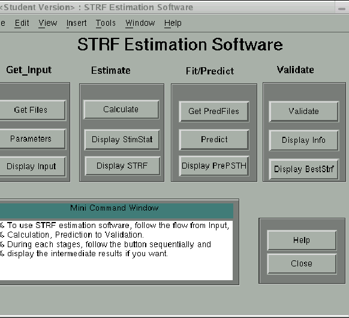

Next: Get Datafiles Window
Up: Application of the STRFPAK
Previous: Application of the STRFPAK
Contents
As mentioned above, STRFPAK is implemented
using the Matlab programming language. To start
the STRFPAK, MATLAB needs to be started first.
Then type the following command at the Matlab prompt:
strfpak
Then the current STRFPAK directory is added to the Matlab path and
the main window shown in the Figure 3.1 appears.
The functionality of STRFPAK can be accessed using the buttons at the center
of the main window. It includes four stages.
Each stage contained in the main window is described as follows:
- Get Input: In this stage, user specifies the input data
by clicking Get Files button. Then he/she needs to
set the calculation parameters using the Parameters button.
The input data can be displayed graphically by clicking the
Display Input button.
- Estimate: In this stage, the second order statistics
of the input stimulus get calculated and the STRF get estimated
by clicking Calculate button. The stimulus auto-correlation
matrix and the stimulus-response cross correlation can be displayed
using the Display StimStat button. The estimated
STRF and its related analysis can be displayed by clicking
the Display STRFs button.
- Predict: In this stage, the estimated STRFs are used to
predict neuron responses with the data files provided by
the user for prediction. By clicking Get PredFiles button, the
user selects the data files used for predication.
Using the Predict button, the user gets the prediction
from the estimated STRFs and stimuli from the user input
data files. The prediction results can be displayed graphically
using the Display PredPSTH button.
- Validate: In this stage, the information values and
correlation coefficients are calculated by clicking
Validate button
to check the goodness of fit.
The results are displayed using the Display Info button.
The best estimated STRF based on predicted information values
is displayed using the Display BestStrf button.
The status window at the bottom of the main
window describes the current stage of execution.
The Help window pops up by pressing the Help button.
The window is closed by pressing the Close button.
Figure 3.1:
The Main Screen of STRFPAK
|  |
Next: Get Datafiles Window
Up: Application of the STRFPAK
Previous: Application of the STRFPAK
Contents
2003-03-19